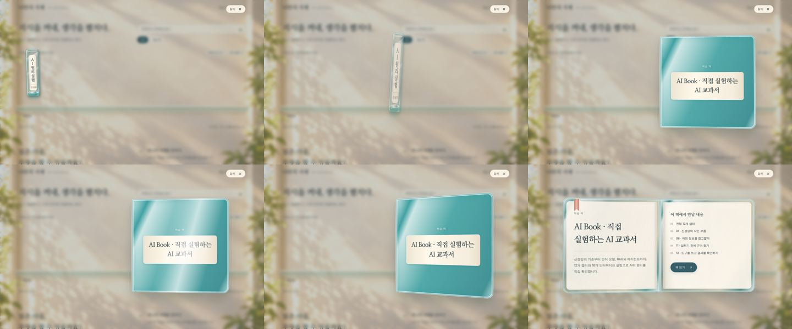
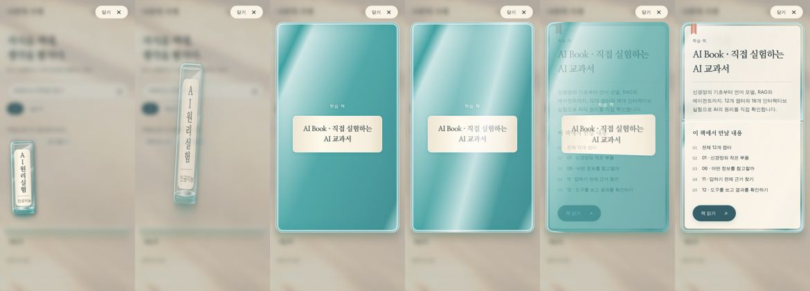
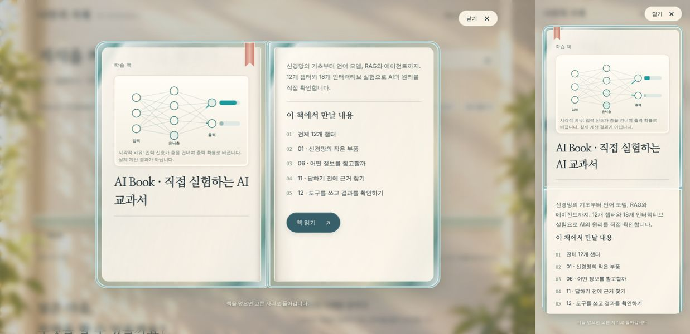

독자에게 달라진 점
현재 등록된 실제 자료 13개를 세 분류의 유리 서가에 배치했습니다. 책등은 맑은 유리, 제목 뒤는 아이보리 라벨로 분리합니다. 명조체 제목 아래 작은 분류를 표시하며, 선택하면 책이 선반에서 뽑혀 날아온 뒤 표지가 넘어가며 두 면으로 펼쳐집니다(연출 기록).
펼친 책에는 제목·소개·실제 문서의 주요 목차가 있습니다. 목차 링크나 읽기 버튼으로 본문을 열고, 닫기 또는 Escape로 원래 책과 포커스로 돌아갑니다. 검색·분류·빈 결과 초기화·전체 제목 목록 보기·동작 줄이기를 제공합니다. 학습 책은 아직 미등록 상태입니다.


작게 나눈 구현 구조
| 파일 | 책임 |
|---|---|
| data/catalog.json | 자료·책·짧은 책등 제목·분류·색의 원본. |
| scripts/build_catalog.py | 카탈로그를 index.html의 생성 구역에 반영. 중복 ID와 발행 상태 검사. |
| scripts/shelf_renderer.py | 한 선반에 최대 12권을 배치하고 실제 문서에서 주요 목차를 추출. HTML 이스케이프와 URL 검사. |
| assets/home.css / shelf.css / reader.css | 방과 공통 UI / 유리 책등과 선반 / 펼친 책과 모바일 읽기 면. |
| assets/home.js / shelf-model.mjs | 검색·필터·목록·동작 설정 / DOM과 분리한 검색·입력 판단. |
| assets/reader.js / motion.js | 네이티브 dialog의 열기·닫기·포커스 / 선택한 책의 CSS 변환과 Web Animations. |
프레임워크와 서버를 추가하지 않았습니다. 모든 문서 링크를 정적 HTML에 남겨 JavaScript 없이도 열 수 있습니다. 수정키 클릭은 브라우저의 원래 링크 동작을 유지합니다. CSS 재질은 유리의 시각적 표현이며 광학 시뮬레이션이 아닙니다.
동작 설정 키는 bookshelf:hub:v1:motion입니다. 시스템의 동작 줄이기가 우선하며, 저장소 접근이 차단된 환경에서도 현재 페이지의 전환은 동작합니다. 미리보기 텍스트와 목차는 빌드 시 생성하므로 문서 제목을 바꾸면 카탈로그 생성기도 다시 실행합니다.
실제로 확인한 결과
| 검사 | 관찰 결과 |
|---|---|
| 13개 자료 | 모든 책을 열고 각 전체 제목이 맞는지 확인한 뒤 닫았습니다. |
| 검색·분류 | “시각화” 검색 2개, 검색 중 기획서 필터 0개, 전체 자료 보기로 13개 복원. |
| 목록 보기 | 책등의 축약 제목 대신 전체 제목 표시. 서가로 전환 가능. |
| 키보드 | Enter로 열기, Escape로 닫기, 닫힌 뒤 원래 책으로 포커스 복원. 모달에서 Shift+Tab 이동 확인. |
| 동작 줄이기 | 수동 전환 후 즉시 열기·닫기와 새로고침 후 설정 유지 확인. 시스템 우선순위는 단위 테스트. |
| 연속 조작 | 열기 직후 닫기를 요청한 뒤 선택 흔적·임시 책 요소가 0개이며 원래 책으로 복귀함을 확인. |
| 본문 연결 | 데스크톱에서 분석 리포트로 이동 후 뒤로 돌아오기. 모바일 프레임에서는 협업 문서 읽기 버튼을 클릭해 본문 이동 확인. |
| 반응형 | 320·390·768·1024px iframe에서 문서 가로 넘침 0, 책등 제목 잘림 0. 스크롤바를 제외한 실제 콘텐츠 폭은 305·375·753·1009px. |
| 좁은 화면의 펼침 | 390px과 320px에서 제목·소개·목차·읽기 링크를 한 열로 확인. 선반 내부 가로 스크롤은 유지. |
| 정적 무결성 | HTML 15개 내부 링크·앵커, 카탈로그 동기화, Python 함수 100줄 제한 검사 통과. |
검증 도구: 공개 GitHub Pages를 Chrome 브라우저로 직접 조작. 반응형 검증 화면은 동일한 사이트를 지정한 폭의 iframe에 표시합니다. 실제 모바일 기기·Safari·Firefox·화면 읽기 프로그램·저성능 장치 성능·Lighthouse 수치는 이번에 검사하지 않았습니다.
python3 scripts/build_catalog.py --check
python3 scripts/validate.py
python3 -m unittest discover -s tests -v
node --test tests/test_shelf_model.mjs
node --check assets/home.js
node --check assets/reader.js
node --check assets/motion.js단위 테스트는 카탈로그의 안전한 URL, 중복 ID, 발행 전 링크 차단, 25권의 선반 분할, 긴 제목, 반복 생성, 복합 검색, 동작 설정 우선순위, 수정키 클릭 보존을 확인합니다.
발견한 문제와 수정
| 증상 | 원인·조치 |
|---|---|
| 선반 옆 세로 스크롤바 | 유리 책의 회전·반올림 때문에 트랙에 약 1px 넘침이 생겼습니다. 세로 overflow는 숨기고 가로 넘김은 유지했습니다. |
| 새 HTML에서 제목이 잘림 | 배포 직후 새 HTML과 브라우저에 캐시된 이전 CSS가 섞였습니다. CSS·진입 스크립트 URL에 버전을 붙였으며, 새 버전의 CSS로 제목 13개와 네 화면 폭을 재검사했습니다. |
| 목록의 제목이 지나치게 짧음 | 책등용 축약 제목과 별도로 전체 제목을 출력하고 목록 보기에서 전환합니다. |
| 길이가 긴 책등 제목 | 초기에는 말줄임표와 글자 축소를 사용했습니다. 2026-10-07 후속 요청으로 이 처리를 제거하고 최대 18px·공백 제외 6글자의 직접 편집 규칙으로 교체했습니다. 전체 제목은 접근성 이름·목록·미리보기에 보존합니다. |
| 로컬 브라우저 실행 환경 | 설치 다운로드가 정상 ZIP으로 제공되지 않았습니다. 공개 페이지의 직접 조작으로 화면과 인터랙션을 검증했습니다. |
브라우저 확장 프로그램의 메타데이터 오류와 페이지 코드 오류는 구분했습니다. 화면 검사에서 페이지 코드가 중단되는 오류는 관찰하지 않았습니다. 원 사이트의 모든 실험 정확성과 학습 효과를 새로 검증했다는 의미는 아닙니다.
자산과 출처
승인 목업과 빈 방 배경은 이번 디자인 과정에서 생성했습니다. 배경에는 책·선반·텍스트를 넣지 않았고, 선택 가능한 책과 글자는 실제 HTML·CSS입니다. evidence/design에 승인 목업, assets/images/library-room.webp에 약 48KB의 배경을 보관합니다.
2026-10-08부터 글꼴은 서가와 모든 책이 함께 쓰는 assets/type.css에서 정의합니다. 책등과 제목의 명조체는 Nanum Myeongjo Bold에서 Noto Serif KR(가변 굵기)로 바꾸었고, 검색·분류·본문은 운영체제 고딕 대신 Pretendard를 씁니다. 두 글꼴 모두 SIL OFL 1.1이며 라이선스는 Noto Serif KR, Pretendard 파일로 보관합니다. 승인 목업의 명조체 라벨이라는 인상은 유지하고, 책등 글자 크기 18px 상한과 6글자 규칙도 그대로입니다. 선택 기준과 비교는 책 구성 표준의 글꼴 체계에 있습니다.
다음 작업과 유지보수
다음 단계는 첫 학습 책의 주제·독자·끝에 할 수 있어야 하는 일을 정하는 것입니다. 그 책의 독립 저장소와 GitHub Pages가 준비되면 카탈로그에 등록합니다. 현재 서재의 검색은 운영 자료를 대상으로 하며, 학습 책 본문의 통합 검색은 구현하지 않았습니다.
- 화면을 수정하기 전에 디자인 기준과 승인 목업을 확인합니다.
- 카탈로그의 spine_title은 필수이며 공백 제외 최대 6글자로 내용을 살려 작성합니다. 책등 글자는 최대 18px이고, spine_category는 짧은 분류명으로 작성합니다.
- 문서 또는 카탈로그를 바꾼 뒤 생성기와 검증 명령을 실행합니다.
- CSS·JavaScript를 바꾸면 index.html의 자산 버전도 갱신하고, 배포 완료 후 실제 공개 화면을 확인합니다.
- 완료·확인 범위·다음 행동은 data/work-state.json에, 새로운 문제는 이 문서의 후속 기록에 남깁니다.
책등 제목 규칙 적용 · 2026-10-07
등록된 AI 책의 책등 이름을 “AI 원리 실험”으로 다듬었습니다. 전체 제목은 유지합니다. 생성기는 누락·길이 초과·말줄임표를 오류로 알리며, NFC 정규화 후 공백을 제외한 글자를 셉니다. 제목 길이에 따른 CSS 분기와 자동 자르기를 제거했습니다. 한글·영문을 세로로 바로 세워 18px로 표시합니다.
320px 화면에서 제목 끝과 분류 사이 여백이 부족하여 라벨 높이와 위쪽 여백을 조정했습니다. 수정 후 320·390px에서는 약 5px, 768·1024px에서는 약 6px의 간격을 확인했습니다. 제목 잘림과 문서 가로 넘침은 없었습니다. Python 17개·JavaScript 4개 테스트가 통과했습니다. 후속 검증 기록을 참고하세요.
Codex와 Claude는 AGENTS.md의 공통 규칙과 책등 제목 규칙을 따릅니다.
책 읽기 마우스 클릭 수정 · 2026-10-07
증상: 펼친 책의 읽기 링크가 Enter로는 이동하지만 마우스로 클릭하면 이동하지 않습니다. 클릭 전 링크 중심의 최상위 요소는 정상적인 a 요소였습니다. 공통 버튼의 :active transform과 회전한 3D 페이지가 함께 적용되는 상태를 수정 대상으로 좁혔습니다.
계획: reader.css에서 읽기 버튼의 눌림 transform을 제거하여 클릭 중 위치와 합성 레이어를 유지합니다. 색 변화 피드백과 책 펼침 효과는 유지합니다. 자산 버전을 갱신했습니다. 수정 전 책 읽기 마우스 클릭 실패와 목차 마우스 클릭 성공을 재현했고, 수정 후 공개 화면의 책 읽기를 마우스로 클릭하여 AI 교과서로 이동하는 것을 확인했습니다. Python 17개·JavaScript 4개 테스트 통과, 내부 링크 오류 0개입니다. 이번 클릭 회귀는 정적 단위 테스트만으로 검증할 수 없으므로 실제 브라우저 클릭을 완료 조건으로 삼았습니다. 이전 키보드 전용 검증은 마우스 동작을 보장하지 못했습니다.
도서 저장소 통합 · 2026-10-08
현재 개발 기준은 도서 통합 기록을 따릅니다. AI 책을 books/ai/에서 개발하며 서가의 읽기·목차 링크는 내부 상대 경로를 사용합니다. 이전 절의 독립 저장소 안내와 자료 13개 검증은 당시 이력입니다.
책 꺼내기·펼치기 연출 강화 · 2026-10-08
요청: 서가에서 책을 뽑아 열 때의 애니메이션을 더 극적으로 만듭니다. 기존에는 책등이 0.48초 만에 앞으로 날아가며 사라지고, 펼친 책의 두 면이 동시에 열렸습니다.
변경: assets/motion.js가 열기를 네 단계로 나눕니다. ① 책등이 선반에서 위로 뽑히며 살짝 기울고 양옆 책이 잠깐 비켜섭니다. ② 책등이 호를 그리며 화면 가운데로 날아오고, 커지면서 표지 쪽으로 돌아섭니다. ③ 덮인 책이 기울어진 상태에서 바로 섭니다. 표지에는 책의 색유리와 전체 제목 라벨을 그리고 빛 반사가 지나갑니다. ④ 표지가 제본선을 축으로 넘어가고, 그 자리를 왼쪽 면이 이어받아 약간 튕기듯 자리 잡습니다. 데스크톱 전체 길이는 약 2.1초입니다. 닫기는 같은 단계를 거꾸로 약 1.3초에 재생하고 책을 원래 자리에 꽂습니다. 표지(.book-cover)는 연출 중에만 만들고 끝나면 지웁니다.
640px 이하에서는 두 면이 세로로 쌓이므로 표지가 책 전체를 덮었다가 넘어가며 사라집니다. 동작 줄이기(시스템 설정 또는 버튼)를 켜면 연출 없이 바로 열립니다. 표지 그림은 시각적 비유이며 책의 실제 표지 디자인이 아닙니다.
확인: Chromium(Playwright)에서 애니메이션을 일시정지하고 시점을 옮겨 1280×800·390×844·320×640 화면의 열기·닫기 프레임을 확인했습니다. 열기 후 상태 open, 닫기 후 dialog 닫힘·원래 책등으로 포커스 복귀, 남은 임시 요소 0개, 동작 줄이기 시 표지 미생성, 콘솔 오류 0개였습니다. 실제 체감 속도와 Safari·Firefox·저사양 기기 성능은 확인하지 않았습니다.


책 비율과 대표 삽화 · 2026-10-08
요청: 펼친 책이 일반 도서처럼 보이지 않고, 글만 있어 단조롭다는 의견을 반영했습니다.
변경: 641px 이상 화면에서 각 면을 실제 책처럼 가로:세로 7:10으로 고정하고, 화면 높이의 74%에 맞춰 크기를 정합니다. 덮인 표지도 같은 세로형 비율이 됩니다. 왼쪽 면에는 분류·대표 삽화·제목을, 오른쪽 면에는 소개·목차·읽기 버튼을 둡니다. 카탈로그 항목에 illustration(저장소 안 SVG 경로)과 illustration_caption을 적으면 생성기가 SVG를 미리보기에 직접 넣습니다. 스크립트·이벤트 속성·링크가 있는 SVG는 생성 오류입니다. 직접 넣어야 동작 줄이기 설정이 삽화 애니메이션도 멈출 수 있습니다.
AI 책의 삽화는 books/ai/assets/shelf-illustration.svg입니다. 입력 신호가 은닉층을 건너 출력 확률 막대로 바뀌는 과정을 3.6초마다 반복합니다. 실제 계산이 아닌 시각적 비유이며 캡션에도 그렇게 적었습니다. 동작 줄이기에서는 신호선을 정지 상태로 보여 줍니다. 책 열기 연출이 끝날 때 CSS 애니메이션까지 취소하던 문제를 고쳐, 삽화는 열린 동안 계속 재생됩니다.
확인: Chromium에서 1280×800·1440×900·1024×600·390×844·320×640 화면을 열었습니다. 1024×600을 뺀 모든 화면에서 면 안 스크롤이 없었습니다. 1024×600에서는 오른쪽 면이 약 106px 스크롤됩니다. 모든 화면에서 문서 가로 넘침 0, 삽화 애니메이션 31개 재생, 닫은 뒤 포커스 복귀, 콘솔 오류 0을 확인했습니다. 새 책을 등록할 때도 책을 대표하는 삽화를 함께 만들어 주세요.

열기 연출과 삽화 속도 조정 · 2026-10-08
요청에 따라 책 열기·닫기 연출과 모든 책의 삽화 반복을 약 20% 빠르게 했습니다. assets/motion.js의 PACE 값(0.8)이 모든 단계의 길이와 지연에 곱해집니다. 그래서 데스크톱 열기는 약 2.1초에서 1.7초로, 닫기는 약 1.3초에서 1.0초로 줄었습니다. AI 책 삽화는 3.6초에서 2.88초, 컴퓨터 책 삽화는 4초에서 3.2초 주기로 반복합니다. 새 책의 삽화도 비슷한 3초 안팎의 주기를 권장합니다.
펼침면 배치 변경 · 2026-10-08
요청에 따라 펼친 책의 왼쪽 면에 목차를, 오른쪽 면에 분류·대표 삽화·제목·소개·읽기 버튼을 둡니다. 인쇄된 책에서 속표지·장 시작처럼 중요한 면은 오른쪽(홀수 쪽)에, 차례는 그 왼쪽에 놓는 관례를 따랐습니다. shelf_renderer.preview가 목차(.reader-contents)와 제목 면(.reader-copy)을 만들고, reader.js가 각각 왼쪽·오른쪽 면에 넣습니다. 640px 이하 화면에서는 제목 면이 먼저 보이도록 순서를 바꿉니다.
확인: Chromium에서 AI·컴퓨터·선형대수·확률 네 책을 1280×800·1024×600·390×844·320×640 화면에서 열고 닫았습니다. 모든 책에서 왼쪽 목차와 오른쪽 삽화·읽기 버튼, 휴대폰의 제목 우선 순서, 문서 가로 넘침 0, 콘솔 오류 0을 확인했습니다. 1280×800에서는 선형대수·확률 책의 오른쪽 면이 5~9px 스크롤됩니다. 1024×600에서는 오른쪽 면이 85~148px 스크롤됩니다.
후속 수정: 휴대폰에서 제목 면이 화면에서만 위로 올라가고 키보드·화면 낭독 순서는 목차가 먼저였습니다. 그래서 제목 면을 DOM에서 먼저 두고, 데스크톱에서는 grid 열로 오른쪽에 배치합니다. 또 assets/*.js의 상대 import에도 ?v= 릴리스 버전을 붙였습니다. 캐시된 reader.js·motion.js가 새 HTML과 섞이지 않게 하기 위해서이며, validate.py가 버전 일치를 검사합니다.
서가 정돈 · 2026-10-08
요청: 서가의 책들이 가지런히 서 있지 않다는 의견을 반영했습니다. 원인은 세 가지였습니다. 책마다 높이를 5px씩 바꾸는 --book-variation, 일부 책등을 ±0.65도 기울이던 nth-of-type 규칙, 그리고 선반 전체에 걸린 원근 때문에 선반 가운데에서 먼 책일수록 폭이 69~71px로 달라지던 점입니다.
변경: 모든 책등의 높이를 같게 했습니다(데스크톱 222px, 1500px 이상 234px, 640px 이하 210px). 기울임 규칙을 지우고, 원근을 각 책등의 transform(perspective(1100px))으로 옮겨 모든 책이 같은 각도와 폭으로 보입니다. 생성기는 더 이상 --book-variation을 쓰지 않습니다. 옆 책이 비켜서는 열기 연출도 같은 원근을 씁니다.
확인: Chromium에서 1280·390·320px 폭의 책 다섯 권이 높이·폭·바닥선·간격이 모두 같음을 측정했습니다(1280px: 72×223px, 바닥 519px, 간격 9px). 다섯 권을 모두 열고 닫았고 포커스 복귀와 콘솔 오류 0을 확인했습니다.
서가 진열 규칙 · 2026-10-08
요청: 책이 늘어나도 서가가 정돈되고 아름답게 보이도록 규칙을 정해 둡니다. 규칙 원문은 사이트 계획의 서가 진열 규칙과 AGENTS.md에 있습니다.
변경: check_shelf_harmony가 색 필수·이웃 색 중복·분류 4글자 제한·같은 분류 붙여 세우기·삽화 누락을 생성 오류로 막습니다. 기존 서가는 이 규칙에 맞게 고쳤습니다. 확률과 통계와 LLM 책이 같은 sage 색으로 붙어 있어 LLM 책을 blue로 바꿨습니다. 분류 “AI 시스템”(5글자)은 320px에서 잘려 “인공지능”으로 바꾸고 AI 책 옆으로 옮겼습니다. 순서는 인공지능(AI·LLM) → 컴퓨터 → 수학(벡터·확률)입니다. 4글자 분류가 66px 책등에 들어가도록 라벨 좌우 여백을 4px에서 1px로 줄였습니다.
책 사이 간격: 책등 사이 9px(휴대폰 8px) 간격은 처음 디자인에서 마우스를 올린 책이 들릴 때 여유를 주려던 값이었습니다. 실제 책장처럼 보이지 않는다는 의견에 따라 1px로 줄였습니다. 마우스를 올린 책은 위로 들리며 이웃 책 위에 표시되어 겹침 문제가 없음을 확인했습니다.
확인: Chromium 1280·390·320px에서 다섯 권의 분류 넘침 0, 제목 넘침 0, 글자 18px, 높이·폭·바닥선 일치를 측정했습니다. 단위 테스트에 진열 규칙의 통과·실패 사례를 추가했습니다.
펼친 책 스크롤 없애기와 서재 이름 · 2026-10-08
요청: 책을 펼쳤을 때 페이지 안에 스크롤이 생기지 않고 화면에 딱 맞게 합니다. 변경 전에는 1024×600에서 오른쪽 면이 85~181px, 768×1024에서 최대 185px, 휴대폰에서는 두 면을 쌓은 책 전체가 111~526px 스크롤되었습니다.
변경: 641px 이상에서는 오른쪽 면을 세로 flex로 바꿔 대표 삽화가 남는 높이만큼만 차지합니다. 제목·소개·읽기 버튼은 그대로 보이고 삽화가 줄어듭니다. 높이 700px 이하 화면에서는 여백과 글자를 조금 줄이고 삽화 설명을 숨깁니다. 640px 이하 휴대폰에서는 실제 책처럼 한 번에 한 면만 보입니다. 첫 면(삽화·제목·소개·읽기)의 “목차 보기 →”와 목차 면의 “← 첫 면으로” 버튼으로 넘기며, 넘긴 뒤 반대쪽 버튼으로 포커스가 옮겨갑니다. 책을 다시 열면 첫 면부터 보입니다.
확인: Chromium에서 1440×900·1280×800·1366×768·1024×600·768×1024·390×844·375×667·320×640의 다섯 책 모두 면·책·장면의 넘침 0, 읽기 버튼과 목차 마지막 항목이 화면 안에 있음을 측정했습니다. 휴대폰 면 넘기기·키보드 Enter·포커스 이동·재열기 초기화, 열기·닫기 연출과 콘솔 오류 0을 확인했습니다.
같은 변경에서 서재 이름을 “나만의 서재”에서 “Jdeok.Lee의 서재”로 바꿨습니다. 페이지 제목·머리말·바닥글·카탈로그 제목·모든 책의 서가 돌아가기 버튼과 운영 문서에 반영했습니다. data/work-state.json의 과거 기록은 그대로 둡니다.